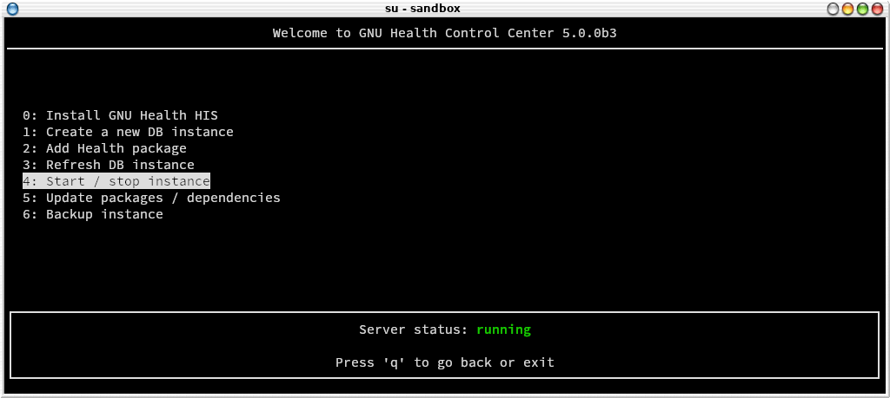
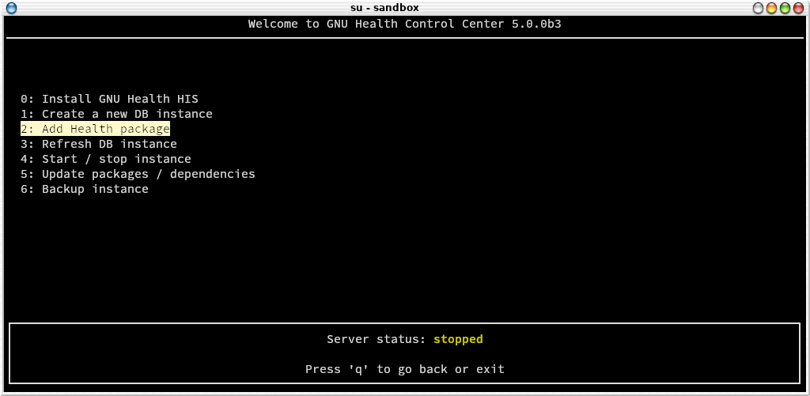
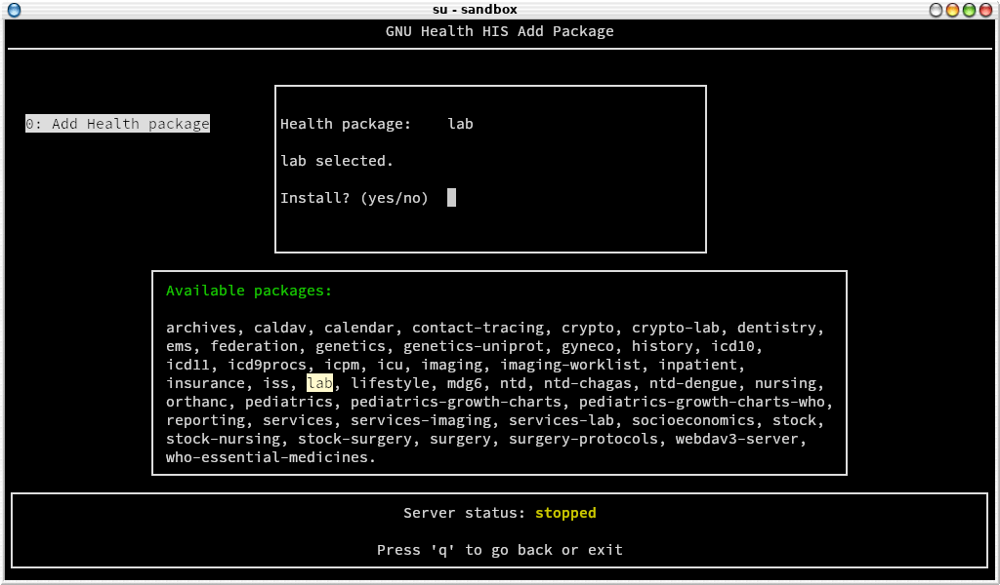
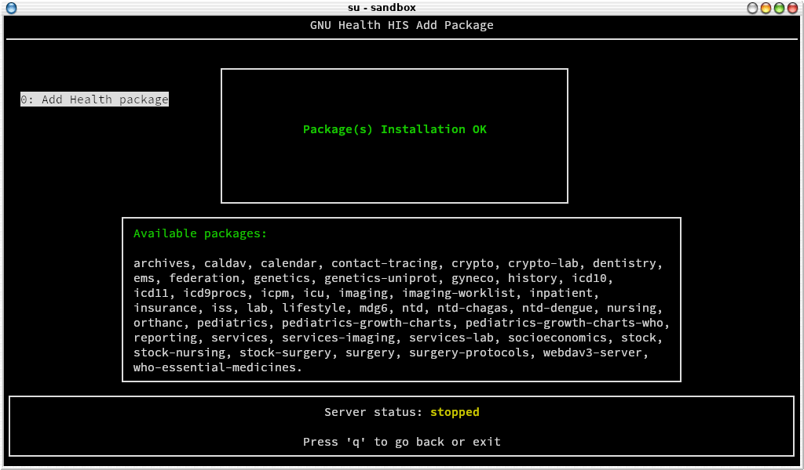
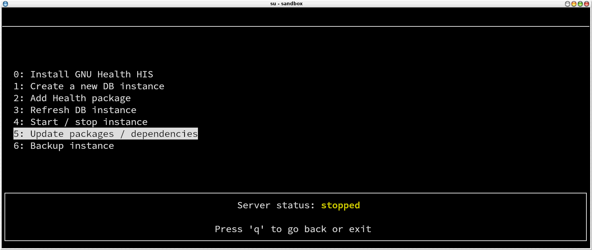
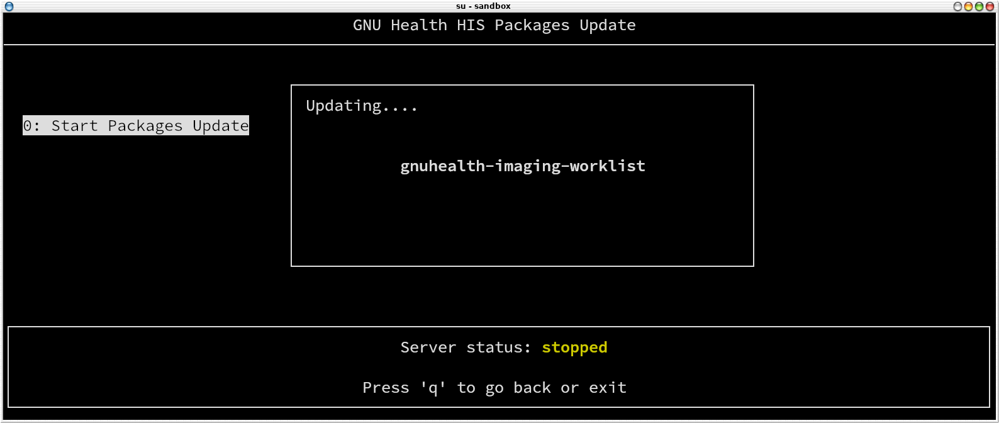
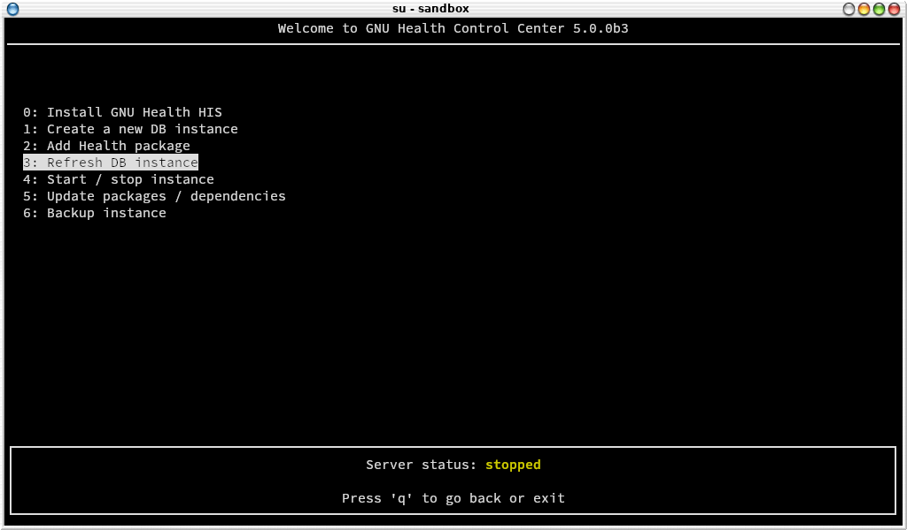
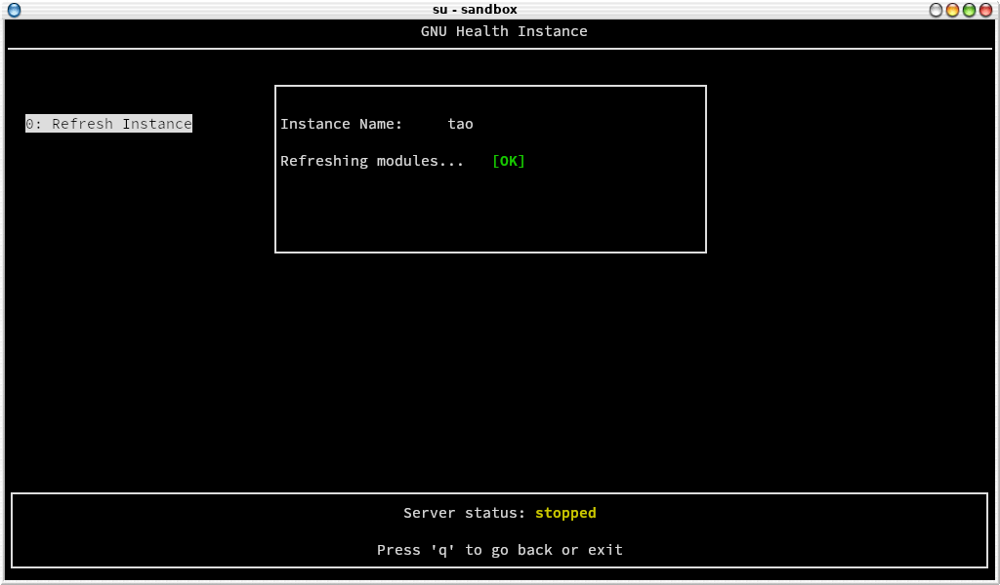
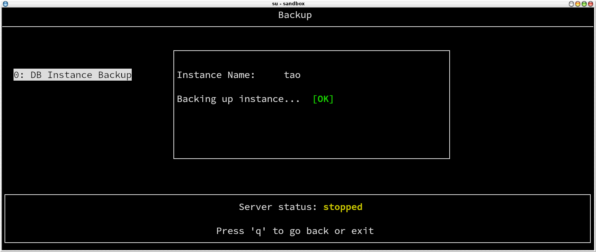

The GNU Health Control Center
The GNU Health Control Center gnuhealth-control is the main tool for administrative tasks of the GNU Health environment.
Since GNU Health HIS 5.0, all the installation and management of the server is done through GNU Health Control.
The new GNU Health control is a self-contained python application that allows you to:
Install the GNU Health and Tryton server
Create new DB instances
Update dependencies
Install GNU Health packages
Start and Stop the GNU Health HIS server
Refresh the Instances (languages, datafiles…)
Make backups
In an nutshell, gnuhealth-control (“ghcontrol”) will do the daily tasks from a single point of entry. We recommend using gnuhealth-control to perform the administrative tasks, since it also generates log files of the different tasks that will be very useful in case of problems.
Running gnuhealth-control
You can invoke gnuhealth-control typing ghcontrol
$ ghcontrol
Server Installation
With gnuhealth-control, you can do the whole server installation. For more information, please refer to Installation with GNU Health Control
Starting and Stopping GNU Health Server
The GNU Health Control Center allows you to see the current status of the server. You can also start and stop the server from the menu.
When you start ghcontrol, the server status will show in at the bottom of the screen. It will show in green when the server is running and in yellow when is stopped.


To start / stop the server you just need to press on the related submenu entry.
Warning
Needless to say, stopping the server will immediately shutdown the Tryton server, and all operations will stop. It will also affect to all the interfaces that are connected to the server.
Choosing additional packages
Depending on your area of work, your institution will need extra functionality that is provided in the 50+ GNU Health modules.
This is a very important step in the GNU Health implementation process, because ideally we should aim for the minimum amount of packages that deliver the functionality we need. Installing extra packages increases complexity, so please make sure you put enough time to study the packages you will install.
Note
You can always install packages at a later time. If you are new to GNU Health, we recommend you spend some days / weeks using only the core package. Once you feel comfortable, you can dive into the remaining functionality options.
Here is the list of current GNUHealth HIS Features
Now that you know which packages you’d like to include on your institution, let’s move to the package installation section.


From the main menu, choose “2: Add Health package” entry. The next screen will show you the list of official GNU Health packages for the current version.
Note
For security and integrity reasons, gnuhealth-control only shows official packages.
The following screen shows an example of adding the “lab” package, that provides the GNU Health Laboratory Information System functionality (Occhiolino)


The all special package There is an special package called “all”. As the name implies, typing all in the package selection field will install the whole list of GNU Health packages, and their dependencies. This option is mostly used for training or evaluation purposes, and rarely in production systems.
Warning
Installing all packages increases complexity and reduces modularity. It is usually reserved for training and evaluation purposes.
Installing a package will do download the related Pyhton gnuhealth package and its dependencies. If you want to activate the package in one or more instances, you need to refresh the instance so you can select it and activate it (next section).
Note
Adding a package installs the relevant gnuhealth packages at operating system level. The activation of the package is instance dependant.


If the everything went well, gnuhealth-control will display the message “Package(s) Installation OK” and you are ready to install more packages or to move to the next section if you’re happy :)
Update packages
GNU Health Control can keep the system up-to-date. gnuhealth-control will all the installed gnuhealth, tryton packages and their dependencies, updating those that are outdated.


Choose “Update Packages / dependencies” in the main menu. GNUHealth-control will download and install the required updates.


Refresh Instance
Refreshing the instance means registering the new resources in your GNU Health database instance. The process traverses all the packages, their models, reports, translations, etc..


To refresh a particular instance from gnuhealth-control, you do so by choosing “3: Refresh DB instance” entry from the main menu.
Note
You need to refresh the instance anytime you install a new package.


Backup
To backup your instance, just select the menu entry “Backup Instance” and enter the instance (db) name.


The database backup will be stored with a timestamp inside the basedir/log directory. In the case of an standard installation, will be /opt/gnuhealth/his-|version-nodot|/backup
The logs will be in /opt/gnuhealth/his-|version-nodot|/log
Restore
The backup made by the GNU Health control center allows you to restore a complete GNU Health instance, including the database and the filesystem. Of course, in order to perform a restore, you need to have a backup.
To restore a database, connect with “gnuhealth” operating system user, and change to the directory where the database backup resides.
Create a new database:
$ createdb your_db_name
Uncompress the database dump that was generated using GNU Health control:
$ gunzip backup_db-name_timestamp.gz
Restore the DB using PostgreSQL:
$ psql your_db_name < backup_db-name_timestamp